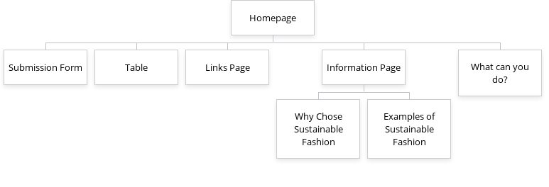

The Conscious Closet - Sustainable Fashion
Project Overview
Application Purpose: The website will promote sustainable fashion by educating users about eco-friendly choices, providing resources, and encouraging community engagement.
Intended Users
- Individuals interested in sustainability and ethical fashion
- Students and young adults looking to reduce fashion waste
- People interested in learning about sustainable brands
Website Content Overview

-
Homepage – Introduction & navigation. This page is to re-direct users to the different webpages that we offer to look at.
This page will include a basic paragraph of what the webpage is all about plus an image.
-
Submission Form – Users submit fashion ideas & sign up for events.
The page will include a form that will take different inputs that’ll be optional such as images of project ideas and daes of events.
-
Events Table – Displays upcoming sustainability events. To notify clients of different events being held by our group.
The content will include a Table illustrating fake events that will be coming in the upcoming months
-
Links Page – Directory of sustainable fashion brands/resources. A page that will lead the client to a variety of sustainable fashion pages
that will help better enrich the client with knowledge about sustainable fdashion and brands. It will include links and images (interactive images).
-
Information Page – General education on sustainable fashion. Knowledge of sustainability in fashion and in general.
The content will include a paragraph and different pictures.
-
Why Choose Sustainable Fashion? – Reasons to adopt sustainable practices. This page will let the user know why they should use more
sustainable fashion instead of the fashion most peoipole use today. A paragraph and maybe intractive graphs.
-
Examples of Sustainable Fashion – Interactive gallery of sustainable outfits. An image gallery of different examples of sustainable
fashion with captions explaining whats going on in the images. Will include a gallery of Interactive Images/Images.
-
What Can You Do? – Actionable steps for users to implement sustainability. This page will give clients with different
activities they can do to help with sustainability and ideas they can implement in their everyday lives.
A paragraph of what people could implement into their everyday lives.
Client Information
Name: Holly Needham
Institution: UNC Greensboro
Email: hollneedham18@gmail.com
Dynamic Functionalities Using JavaScript
| Feature |
Description |
Page |
| Form Validation |
Ensures required fields are completed before submission. My BYO Form Page. |
Submission Form |
| Hover Preview |
Displays extra info when hovering over links. |
Links Page |
| Animated Infographics |
Visual representation of sustainability benefits. Infographic Journal. |
Why Choose Sustainable Fashion |
| Interactive Gallery |
Click-to-enlarge images for better viewing. Vogue. |
Examples of Sustainable Fashion |